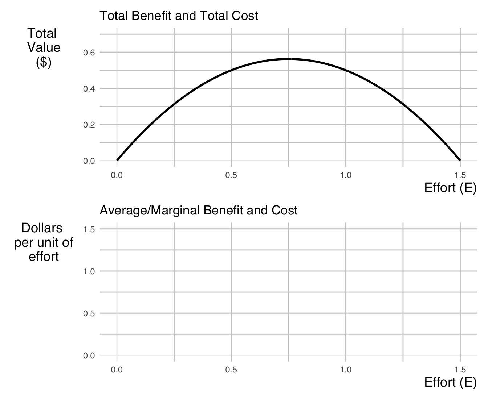
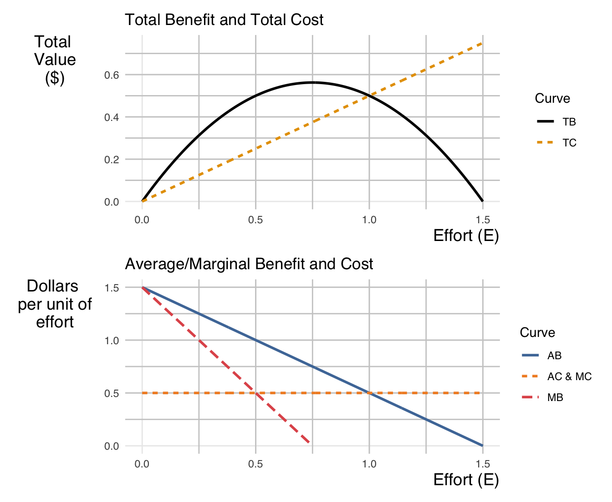

ECON 340 - Midterm Exam II
SUNY Geneseo, Fall 2025
Section 1. Multiple Choice
Question 1
According to the “Bounded Rationality” framework, why might a consumer stick with an inefficient heating system despite the availability of a cost-saving upgrade?
- They are influenced by “Green Leases” which prohibit upgrades.
- They possess perfect information but are acting out of altruism.
- They are exhibiting status quo bias and loss aversion, weighing the upfront loss of money more heavily than future gains.
- They are strictly rational agents who have calculated that the upgrade has a negative Net Present Value.
Show answer
Answer: c
A consumer with bounded rationality may overweight the immediate cost of the upgrade (loss aversion) and prefer to stick with the current system (status quo bias), even if the upgrade would save money over time. They are not acting like perfectly rational NPV maximizers.
Question 2
In the “Now vs. Soon” experiment, an individual chooses $5 today over $8 in one month, but chooses $8 in 13 months over $5 in 12 months. This reversal in preference demonstrates:
- Time Inconsistency (Present Bias)
- Bounded Rationality
- Asymmetric Information
- The Endowment Effect
Show answer
Answer: a
This pattern shows present bias: when “today” is involved, the person strongly prefers immediate rewards, but when both options are in the future, they are more patient. That means preferences change over time, which is called time inconsistency.
Question 3
Consider two policies with the same undiscounted net benefits:
- Policy A: large benefits in the near term, small benefits later
- Policy B: small benefits in the near term, large benefits far in the future
If the discount rate is increased, which statement is most accurate?
- Policy A becomes relatively more attractive than Policy B
- Policy B becomes relatively more attractive than Policy A
- Both policies are unaffected by the discount rate
- Both policies become equally unattractive
Show answer
Answer: a
A higher discount rate shrinks the present value of distant future benefits more than near-term benefits. Since Policy B’s gains are farther in the future, it is penalized more by a higher discount rate, so Policy A becomes relatively more attractive.
Question 4
When marginal abatement costs of pollution emissions are uncertain and the marginal damage from emissions changes little with small changes in emissions, _________________________ are generally preferred as the primary policy tool for pollution regulation.
- Price instruments (e.g., an emissions tax)
- Quantity instruments (e.g., an emissions cap)
- Either price or quantity instruments, since they perform identically
- No regulation is necessary in this case
Show answer
Answer: a
If marginal damages are relatively flat (don’t change much with emissions) but abatement costs are uncertain, setting a price (a tax) is typically more efficient. The tax lets emissions adjust to unexpected costs without creating big welfare losses.
Question 5
Which of the following best describes the political economy advantage of Cap-and-Trade over Carbon Taxes?
- Cap-and-Trade systems are administratively simpler to implement.
- Cap-and-Trade guarantees a stable price for firms, aiding investment planning.
- Cap-and-Trade automatically adjusts to technological changes by increasing reduction levels.
- Cap-and-Trade avoids the label “tax” and allows for free permit allocation to secure industry buy-in.
Show answer
Answer: d
Cap-and-Trade can be framed as a “market for permits” rather than a “tax,” which can be politically easier to pass. In addition, permits can be freely allocated (grandfathered) to firms to build political support, even though the system still puts a price on emissions.
Section 2. Filling-in-the-Blanks
Question 6
Two key mechanisms under bounded rationality that lead to underinvestment in efficiency are _________________________ (overweighting losses relative to gains) and _________________________ (preference for the current situation).
Show answer
Answer: loss aversion; status quo bias
People tend to overweight upfront losses (loss aversion) and prefer to stick with what they already have (status quo bias), even when an efficiency upgrade would pay off over time.
Question 7
_________________________ is achieved when the allocation of resources over time maximizes the present value of net benefits to society. This concept helps decide how much to consume today versus how much to invest for the future.
Show answer
Answer: Dynamic efficiency
Dynamic efficiency means choosing a time path of consumption and investment that maximizes the present value of net benefits, balancing the welfare of current and future generations.
Question 8
In a Cap-and-Trade system, firms will trade permits until the Marginal Abatement Cost (MC) of every firm is equal to the _________________________ If a firm’s MC is lower than this price, it will choose to _________________________ pollution and _________________________ permits.
Show answer
Answer: permit price; abate more; sell
Firms trade until each firm’s marginal abatement cost equals the permit price. If a firm can reduce emissions cheaply (MC < permit price), it will abate more pollution and sell its excess permits.
Question 9
The _________________________ provides the overall framework for global climate action, and the annual _________________________ meetings — such as the ongoing one being held in Belém, Brazil — serve as the main forum where international climate decisions are negotiated and reviewed.
Show answer
Answer: United Nations Framework Convention on Climate Change (UNFCCC); Conference of the Parties (COP)
The UNFCCC sets the overarching legal framework for international climate policy, and the annual COP meetings are where countries negotiate, review, and update climate commitments.
Question 10
Two fundamental tensions in global climate policy arising from cross-country differences in climate ambition and policy design are _________________________ concerns and _________________________ concerns.
Show answer
Answer: competitiveness; carbon leakage
Countries worry that stricter climate policies may hurt international competitiveness, and that emissions-intensive production may shift to countries with weaker policies, creating carbon leakage.
Section 3. Short Answers
Question 11 — Bounded Willpower, Split Incentives, and Energy Efficiency
Part A
Explain the concept of bounded willpower using the idea of discount rates. In your answer, contrast present-biased (time-inconsistent) discounting with the standard model of time-consistent rational discounting.
Write approximately 3–5 sentences.
Show answer
Under the standard model of time-consistent rational discounting, individuals use a constant discount rate over time, so their preferences between today and the future remain stable. Bounded willpower, however, is captured by present-biased (time-inconsistent) discounting, under which people apply a much higher discount rate to the immediate future than to later periods. This means they care far less today about payoffs that occur in the near future than about payoffs that occur further away in time. As a result, rewards available now feel much more attractive than future rewards, even when the future rewards are objectively larger and more important. This generates a strong tendency toward immediate gratification, leading to preference reversals and self-control problems over time.
Part B
Explain why bounded willpower can lead to underinvestment in energy-efficient technologies, even when these investments have positive net present value under standard discounting.
Write approximately 3–5 sentences.
Show answer
With bounded willpower, consumers overweight upfront costs and heavily discount future energy savings. Even if an energy-efficient appliance has a positive net present value under rational discounting, the immediate purchase price feels too costly relative to delayed benefits. Present bias causes people to procrastinate or avoid the investment altogether. As a result, privately optimal decisions deviate from what would be chosen under fully rational, time-consistent preferences.
Part C
Explain why the principal–agent problem (split incentives) can lead to underinvestment in energy-efficient technologies.
Write approximately 3–5 sentences.
Show answer
Split incentives arise when the party that pays for an energy-efficient investment is not the same party that receives the energy savings. For example, landlords may pay for building upgrades, while tenants receive the lower utility bills. Because the landlord cannot fully capture the benefits of the investment, they have little incentive to invest in energy efficiency. This misalignment of costs and benefits leads to systematic underinvestment, even when efficiency improvements are socially and privately cost-effective overall.
Section 5. Analytical Modeling
Question 13. Optimal Harvesting in a Fishery
Consider a fishery where the total benefit (TB), total cost (TC), marginal benefit (MB), marginal cost (MC), average benefit (AB), and average cost (AC) of fishing effort \(E\) are:
| Total Benefit & Cost | Marginal Benefit & Cost | Average Benefit & Cost |
|---|---|---|
| \(TB(E) = 1.5E - E^{2}\) | \(MB(E) = 1.5 - 2E\) | \(AB(E) = 1.5 - E\) |
| \(TC(E) = 0.5E\) | \(MC(E) = 0.5\) | \(AC(E) = 0.5\) |
where \(E\) is the level of fishing effort (e.g., number of boat-days).
Part A — Graphs
In the top panel, sketch the Total Cost (TC) curve as a function of fishing effort \(E\).
In the bottom panel, sketch the Marginal Benefit (MB), Marginal Cost (MC), Average Benefit (AB), and Average Cost (AC) curves as functions of fishing effort \(E\).
- Clearly label each curve as MB, MC, AB, or AC.
Show answer

Part B — Efficient Effort Level
- Find the efficient effort level \(E^*\).
- State the condition that characterizes the efficient effort \(E^*\).
Show answer
Efficiency requires that marginal benefit equals marginal cost:
\(MB(E) = MC(E)\)
\(1.5 - 2E = 0.5\)
Solving,
\(2E = 1.0 \Rightarrow E^* = 0.5\).
Thus, the efficient effort level is \(E^* = 0.5\), and it is characterized by the condition
\(MB(E^*) = MC(E^*)\).
Part C — Open-Access Effort Level
- Find the open-access effort level \(E_{OA}\).
- State the condition that characterizes the open-access effort \(E_{OA}\) in an open-access fishery.
Show answer
In an open-access fishery, effort expands until profit is driven to zero, which occurs when average benefit equals average cost:
\(AB(E) = AC(E)\)
\(1.5 - E = 0.5\)
Solving,
\(E_{OA} = 1.0\).
Thus, the open-access effort level is \(E_{OA} = 1.0\), and it is characterized by the condition
\(AB(E_{OA}) = AC(E_{OA})\).
Part D — Multiple Choice Questions
The Environmental Defense Fund (EDF) partnered with fishermen to replace the old open-access “race-to-fish” system with a catch-share system, where fishermen each receive a guaranteed, tradable share of the total permitted catch (a form of harvest right). This reform changed the economic environment of the fishery without altering biological costs or technological constraints.
(a) Policy Design
A catch-share system—which assigns secure, tradable harvest rights to fishermen—primarily represents which type of economic solution?
- An incentive-based policy that changes the strategic behavior of fishermen
- An information intervention that provides better data to fishermen
- An institutional reform that changes property rights and governance rules
- A social norm campaign that encourages fishermen to voluntarily reduce effort
Show answer
Answer: c
Catch shares create secure, tradable property rights over the fish stock, changing the institutional structure and governance of the fishery. This is primarily an institutional reform in property rights, although it also has strong incentive effects.
Question 14 — EU–India Climate Policy Game and CBAM
India exports significant amounts of steel to the EU, which is India’s largest steel export market. Climate policy choices in the EU and India therefore interact not only through global emissions and climate damages, but also through trade in carbon-intensive sectors such as steel.
We model this as a climate policy game:
- Row player: EU
- Column player: India
- Each chooses:
- Cooperate: strong climate policy (e.g., high carbon price, tight regulations)
- Defect: weak climate policy (low or no carbon price, lax standards)
- Payoffs are net national welfare, measured in stylized payoff points (higher is better).
Part A — Baseline Game
The baseline payoff matrix is:
| India | |||
|---|---|---|---|
| Cooperate | Defect. | ||
| EU | Cooperate | (5, 4) | (3, 5) |
| Defect | (6, 1) | (2, 2) |
A-1. EU’s Best Responses
- When India chooses Cooperate, the EU’s best response is _________________________.
- When India chooses Defect, the EU’s best response is _________________________.
Show answer
- When India chooses Cooperate, the EU’s best response is Defect (since \(6 > 5\)).
- When India chooses Defect, the EU’s best response is Cooperate (since \(3 > 2\)).
So the EU’s best-response strategy is: Defect if India Cooperates; Cooperate if India Defects.
A-2. India’s Best Responses
- When the EU chooses Cooperate, India’s best response is _________________________.
- When the EU chooses Defect, India’s best response is _________________________.
Show answer
- When the EU chooses Cooperate, India’s best response is Defect (since \(5 > 4\)).
- When the EU chooses Defect, India’s best response is Defect (since \(2 > 1\)).
So India’s best-response strategy is to always Defect, regardless of what the EU does.
A-3. Nash Equilibrium (NE)
Find a Nash equilibrium of the baseline game.
Show answer
A Nash equilibrium is a strategy pair where each player is playing a best response to the other.
- From A-1 and A-2:
- If India Defects, the EU’s best response is Cooperate.
- If the EU Cooperates, India’s best response is Defect.
- If India Defects, the EU’s best response is Cooperate.
So the strategy profile (EU: Cooperate, India: Defect) is a Nash equilibrium, with payoffs \((3, 5)\).
A-4. Economic Interpretation of the Baseline NE
- Intuitively explain why India might choose its strategy in the baseline NE.
Write approximately 2–3 sentences.
Show answer
In the baseline game, India gains more in the short run by Defecting, regardless of what the EU does. Defection lets India enjoy weaker climate constraints, which can lower production costs and support export competitiveness, while still partly benefiting from the EU’s stronger climate action. This is a classic free-riding incentive in international climate policy.
Part B — Introducing a CBAM
Now suppose the EU introduces a Carbon Border Adjustment Mechanism (CBAM) that imposes tariffs on carbon-intensive imports from countries that Defect on climate policy.
- If India Defects while the EU Cooperates, Indian exporters face a carbon tariff at the EU border.
The new payoff matrix with CBAM is:
| India | |||
|---|---|---|---|
| Cooperate | Defect. | ||
| EU | Cooperate | (5, 5) | (2, 1) |
| Defect | (2, 3) | (1, 1) |
B-1. EU’s Best Responses under CBAM
- When India chooses Cooperate under the new payoffs, the EU’s best response is _________________________.
- When India chooses Defect under the new payoffs, the EU’s best response is _________________________.
Show answer
- When India chooses Cooperate, the EU gets \(5\) from Cooperate and \(2\) from Defect, so the best response is Cooperate.
- When India chooses Defect, the EU gets \(2\) from Cooperate and \(1\) from Defect, so the best response is again Cooperate.
Thus, under CBAM, the EU’s best-response strategy is to always Cooperate.
B-2. India’s Best Responses under CBAM
- When the EU chooses Cooperate under the new payoffs, India’s best response is _________________________.
- When the EU chooses Defect under the new payoffs, India’s best response is _________________________.
Show answer
- When the EU chooses Cooperate, India gets \(5\) from Cooperate and \(1\) from Defect, so the best response is Cooperate.
- When the EU chooses Defect, India gets \(3\) from Cooperate and \(1\) from Defect, so the best response is again Cooperate.
Thus, under CBAM, India’s best-response strategy is to always Cooperate.
B-3. Nash Equilibrium (NE) under CBAM
Find a Nash equilibrium of the game with CBAM.
Show answer
A Nash equilibrium requires that each player is playing a best response to the other. From B-1 and B-2, both the EU and India best respond by Cooperating regardless of the other’s action.
Therefore, the strategy profile (EU: Cooperate, India: Cooperate) is a Nash equilibrium under CBAM, with payoffs \((5, 5)\).
B-4. Economic interpretation of the baseline NE
- Intuitively explain why India might choose its strategy in the NE under CBAM.
Write approximately 1–2 sentences.
Show answer
With CBAM, if India Defects while the EU Cooperates, it faces carbon tariffs that sharply reduce its payoff from exports to the EU. By Cooperating, India both avoids these tariffs and gains a higher net payoff, so it is now in India’s self-interest to adopt stronger climate policies.
B-5. Policy Trade-Offs
- Discuss one potential benefit and one potential risk or downside of using CBAM to induce cooperation in a climate policy game like EU–India.
Write approximately 5–7 sentences.
Show answer
A key benefit of CBAM is that it helps align trade incentives with climate goals: countries that maintain weak climate policies face tariffs, which reduces their competitive advantage from lax regulation and encourages them to raise their climate ambition. This can also reduce carbon leakage, since production is less likely to shift to countries with weaker policies. However, a major downside is the risk of trade tensions and political backlash. Countries like India may view CBAM as a form of green protectionism, potentially leading to disputes in the WTO or retaliatory tariffs. CBAM may also impose disproportionate costs on developing countries with limited fiscal space and technological capacity to decarbonize quickly. If not carefully designed with climate finance, exemptions, or support mechanisms, CBAM could worsen perceptions of unfairness in the global climate regime, even as it strengthens economic incentives to cooperate.